AutoEval: Predictive Modeling for Used Car Pricing
Authors
Pavan Yellathakota
Order of Execution
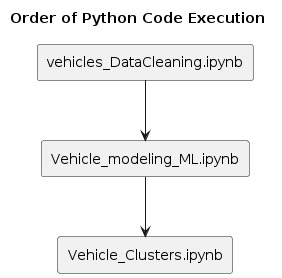
Dataset Overview
- Source: The dataset is based on Craigslist used car ads, available on Kaggle.
- Fields Summary: Includes id, url, region, price, year, manufacturer, model, condition, cylinders, fuel, odometer, transmission, drive, type, paint_color, state, lat, long, etc.
- Data Relevance: Useful for buyers and sellers to assess used car pricing trends.
Project Objective
- Target: Predict the selling price of used cars.
- Application: Deployable in car trading platforms to provide automated price recommendations.
Project Workflow
Data Overview
Initial Size: 426,880 rows, 26 columns
Data Cleaning and Preprocessing
- Removed outliers and irrelevant columns
- Addressed missing values
- Processed redundant records
Cleaned Size: 71,094 rows, 15 columns
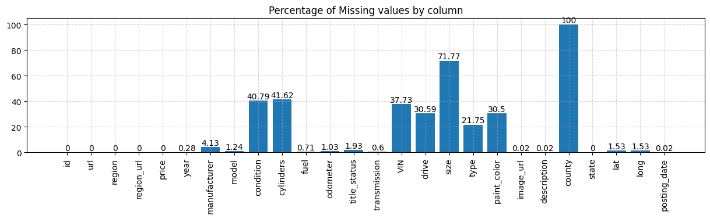
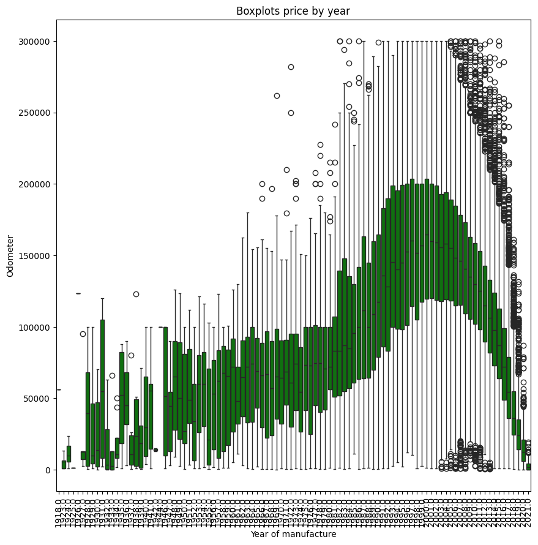
Feature Engineering
- Derived new feature:
car_age
- One-hot & frequency encoding for categorical variables
- Scaled numeric features
Exploratory Data Analysis (EDA)
New Feature: Odometer_Price_Ratio = Odometer / Price
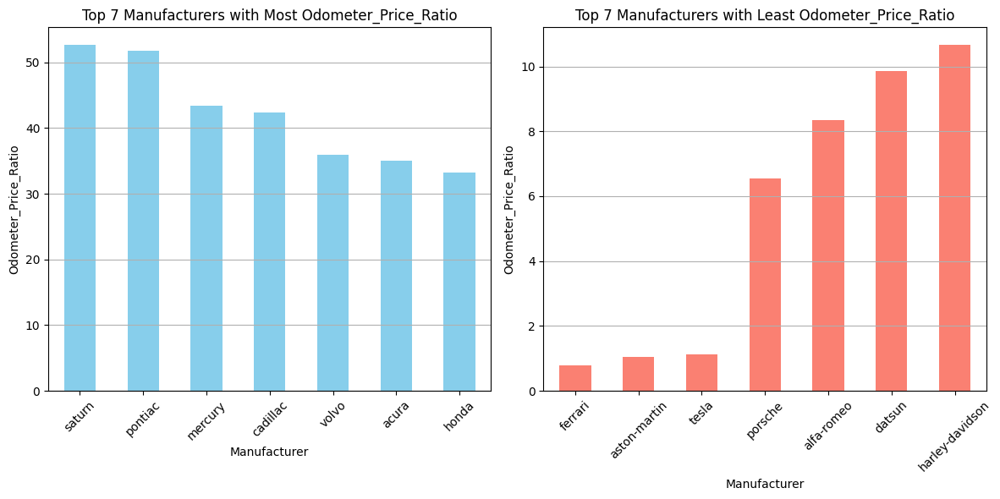
- Target Variable:
price
- Problem Type: Regression
- Correlation Matrix:
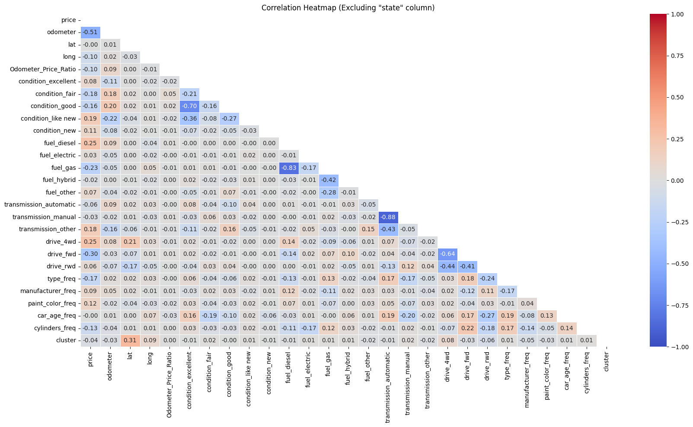
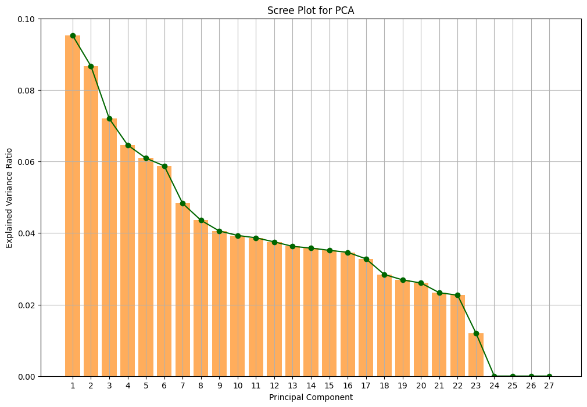
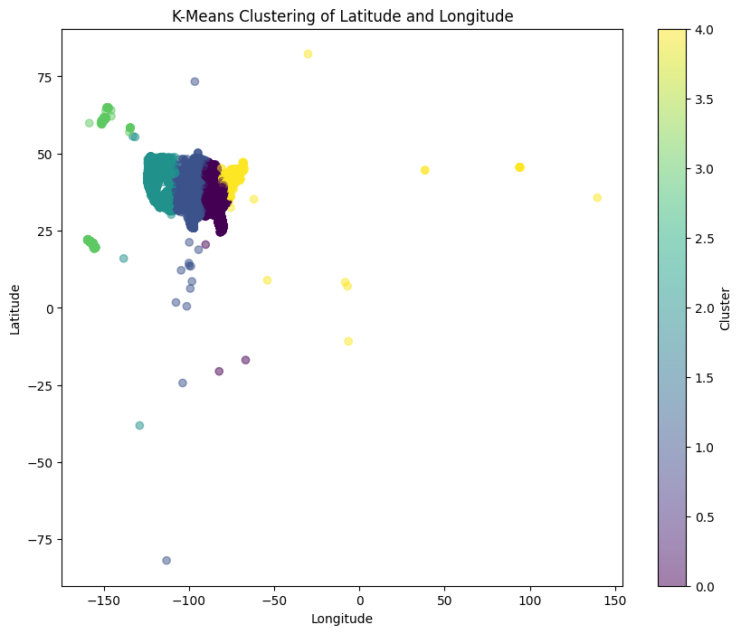
Model Development
- Train/Test Split: 80% train / 20% test
- Models used: Linear Regression, Decision Tree, Random Forest, XGBoost
Validation and Performance
- Metrics: R² Score, MSE, RMSE
- Visualization of predictions:
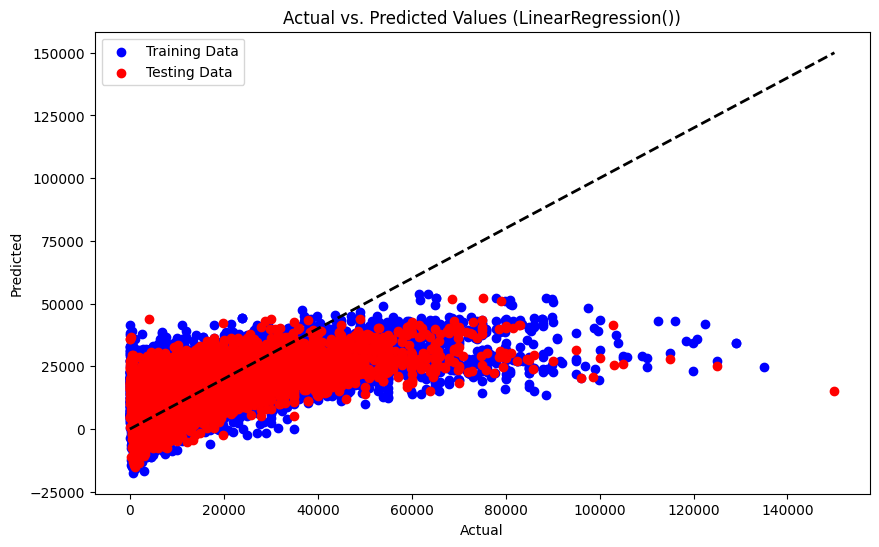
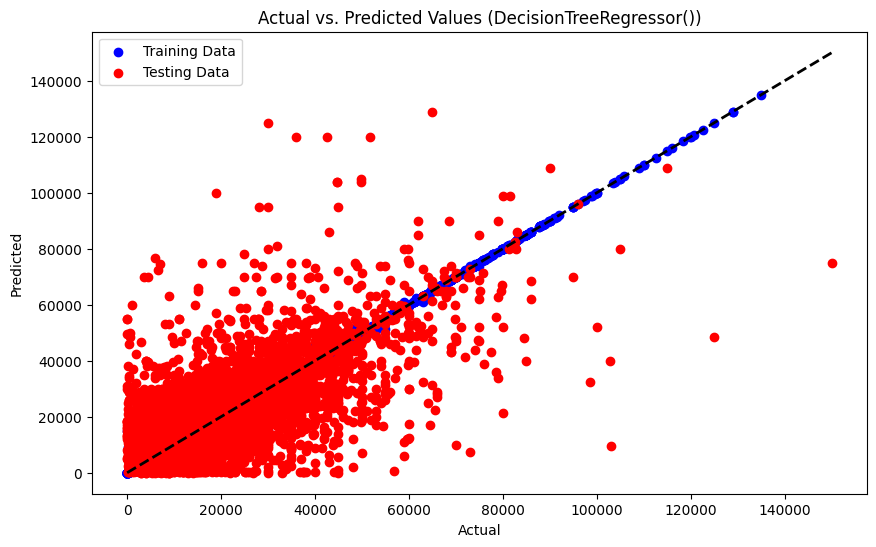
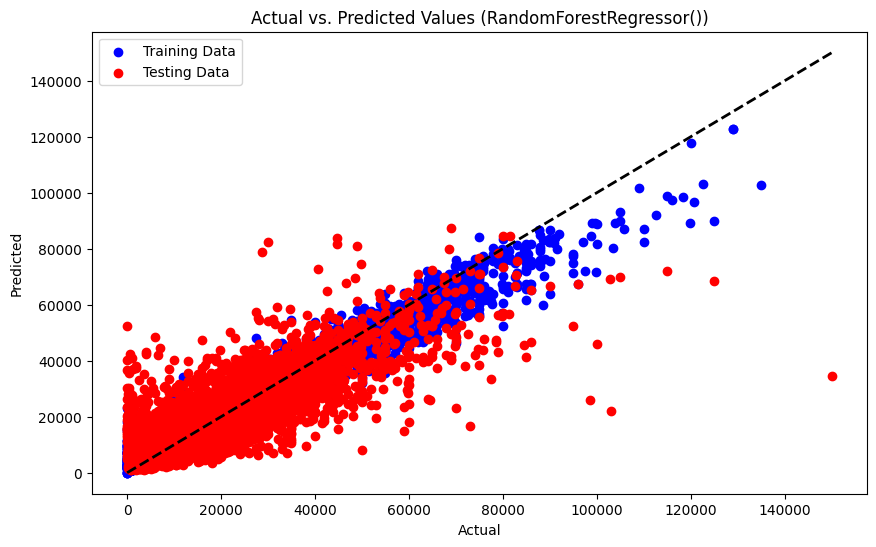
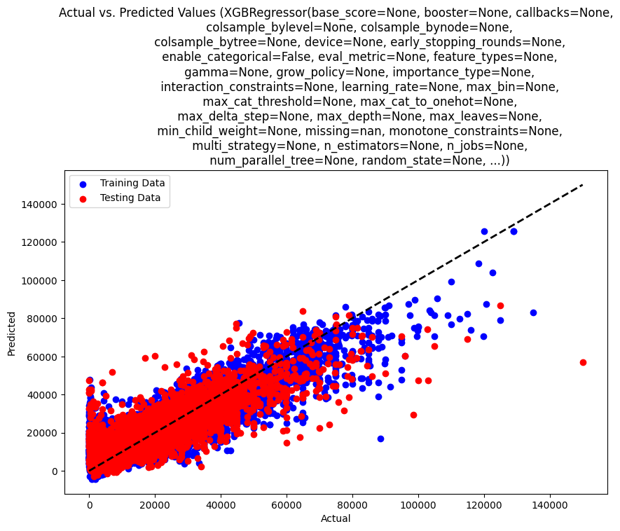
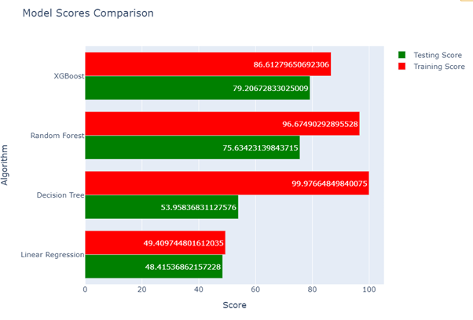
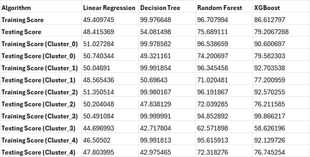
External Test Data Prediction
{'odometer': [95000],
'condition_excellent': [1],
'condition_fair': [0],
'condition_good': [0],
'condition_like new': [0],
'condition_new': [0],
'fuel_diesel': [0],
'fuel_electric': [0],
'fuel_gas': [1],
'fuel_hybrid': [0],
'fuel_other': [0],
'transmission_automatic': [1],
'transmission_manual': [0],
'transmission_other': [0],
'drive_4wd': [0],
'drive_fwd': [1],
'drive_rwd': [0],
'type_freq': [0.027],
'manufacturer_freq': [0.065],
'paint_color_freq': [0.151],
'car_age_freq': [0.063],
'cylinders_freq': [0.359]}
Predicted Prices:
- Random Forest: $14,317.12
- Decision Tree: $14,000.00
- XGBoost: $11,684.71
- Linear Regression: $12,924.74
Deployment
- Can be deployed as a pricing tool for used car marketplaces
- Retraining on updated data recommended
Future Work
- Integrate data from other platforms
- Enhance model with image/text-based features from listings
Conclusion
Machine learning models can significantly enhance the functionality of used car trading platforms. Random Forest and XGBoost outperformed other models, showing robust performance across clustered regions as well.